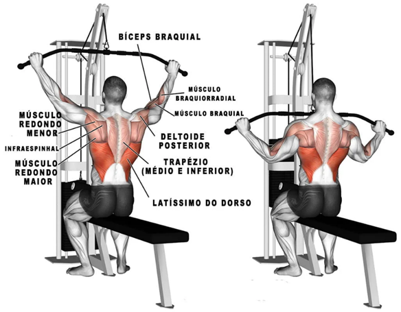

Exercicios de Costas
Puxada alta
- 1- Segure a barra com mãos posicionadas ligeiramente mais afastadas que a
largura dos ombros;
- 2- Escápulas ativadas e na posição neutra sentado no banco;
- 3- Pés firmes no solo transferindo a força para o quadril;
- 4- Região abdominal ativada;
- 5- Execute a puxada trazendo a barra na direção baixa do peitoral ou mama;
- 6- Retorne de forma controlada sem perder a ativação das escápulas.

Remada
- 1- Segure os halteres com o tronco totalmente apoiado no banco;
- 2- Escápulas ativadas e na posição neutra, os ombros não ficam apoiados no
banco;
- 3- Pés firmes no solo transferindo a força para o quadril;
- 4- Região abdominal e glúteos devem estar ativados;
- 5- Execute a puxada trazendo os halteres na direção do umbigo;
- 6- Retorne de forma controlada sem perder a ativação do tronco.
Puxada ou remada baixa aberta
- 1- Segure a barra com mãos posicionadas ligeiramente mais afastadas que a
largura dos ombros;
- 2- Escápulas ativadas e na posição neutra sentado no banco;
- 3- Pés firmes no solo transferindo a força para o quadril;
- 4- Região abdominal ativada;
- 5- Execute a puxada trazendo a barra na direção baixa do peitoral ou mama;
- 6- Retorne de forma controlada sem perder a ativação das escápulas.

Encolhimento de ombros com halter
- 1- Posicionados na lateral, segurando os halteres com a palma das mãos
voltada para dentro em direção ao centro do nosso corpo,
não esqueça de ajustar os ombros, eles não devem estar projetados à frente, pois a sobrecarga
agora está na lateral do corpo;
- 2- Na sequência com cotovelos estendidos em todo o tempo você deve
suspender os pesos encolhendo os ombros em direção
a sua orelha ou em direção ao teto, retorne à posição inicial de forma controlada e inicie a
próxima repetição do movimento”.
Barra Fixa
- 1- Palma das mãos voltada para si e afastadas na largura do ombro;
- 2- Pendure-se na barra com braços totalmente estendidos;
- 3- Escápulas ativadas e na posição neutra;
- 4- Realize a flexão do cotovelo até que o queixo chegue na linha da barra.
- 5- Fique segurnado na Barra durante 1 minuto e consiga fazer 1 flexao.
- 6- Em 3 dias você já consegue fazer 4 flexões.
- 7 -Persista e alcance o Sucesso.
Descubra Novos exercicios